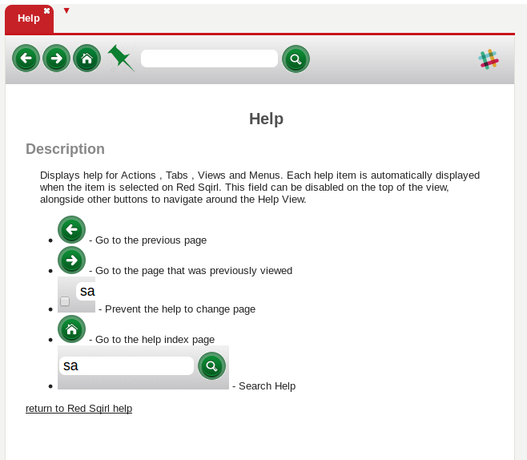
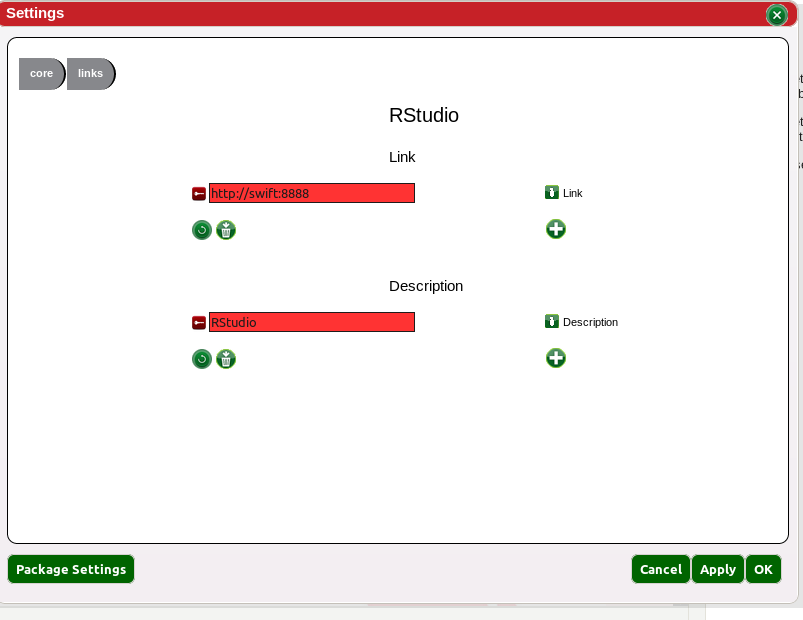

Displays help for Actions, Tabs, Views and Menus. Each help item is automatically displayed when the item is selected on Red Sqirl.
This field can be disabled on the top of the view, alongside other buttons to navigate around the Help View.
Red Sqirl works even better in synergy with other data science tools (RStudio, Jupyter, Tableau dashboards etc.). If you would like to keep links handy for everyone, head to the main setting links menu.
